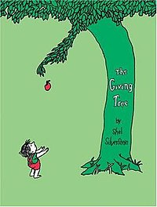

The Giving Tree is an American children's picture book written and illustrated by Shel Silverstein. First
published in 1964 by Harper & Row, it has become one of Silverstein's best-known titles, and has been translated
into numerous languages.
This book has been described as "one of the most divisive books in children's literature"; the controversy stems from
whether the relationship between the main characters (a boy and the eponymous tree) should be interpreted as positive
(i.e., the tree gives the boy selfless love) or negative (i.e., the boy and the tree have an abusive relationship).
Background
Silverstein had difficulty finding a publisher for The Giving Tree. An editor at Simon & Schuster rejected the book's
manuscript because he felt that it was "too sad" for children and "too simple" for adults. Tomi Ungerer encouraged
Silverstein to approach Ursula Nordstrom, who was a publisher with Harper & Row.
An editor with Harper & Row stated that Silverstein had made the original illustrations "scratchy" like his cartoons
for Playboy, but that he later reworked the art in a "more pared-down and much sweeter style."[3] The final black-and-
white drawings have been described as "unadorned… visual minimalism."[4] Harper & Row published a small first edition
of the book, consisting of only 5,000–7,500 copies, in 1964.
Reception
Interest in the book increased by word of mouth; for example, in churches "it was hailed as a parable on the joys of
giving." As of 2001, over 5 million copies of the book had been sold, placing it 14th on a list of hardcover "All-
Time Bestselling Children's Books" from Publishers Weekly. By 2011, 8.5 million copies of the book had been sold.
In a 1999–2000 National Education Association online survey of children, among the "Kids' Top 100 Books," the book was
24th. In the 2007 online "Teachers' Top 100 Books for Children" poll by the National Education Association, the book
came in third. It was 85th of the "Top 100 Picture Books" of all time in a 2012 poll by School Library Journal. Scholastic
Parent & Child magazine placed it #9 on its list of "100 Greatest Books for Kids" in 2012. As of 2013, it ranked third on
a Goodreads list of "Best Children's Books."

Author : Shel Silverstein
Genre : Children's picture book
Publisher : Harper & Row
Publication date : October 7, 1964 (51 years old)
Followed by Who Wants a Cheap Rhinoceros?